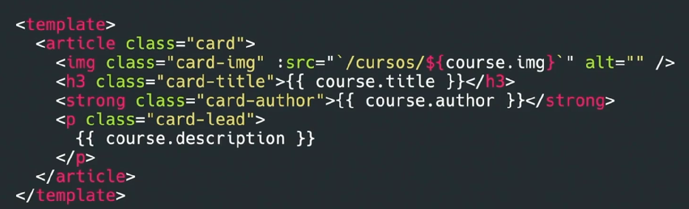
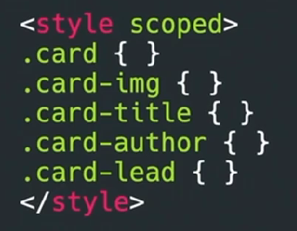
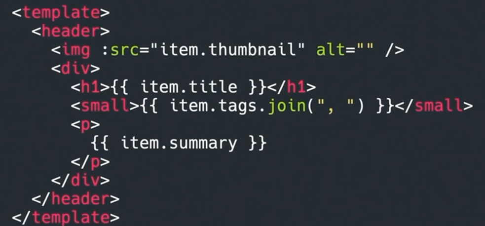
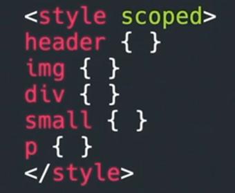
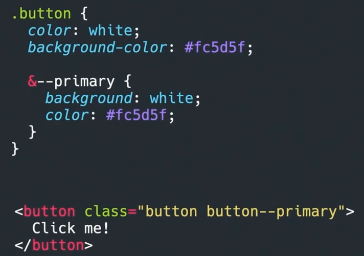
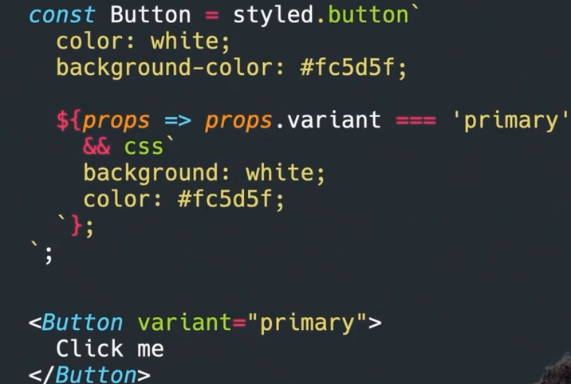
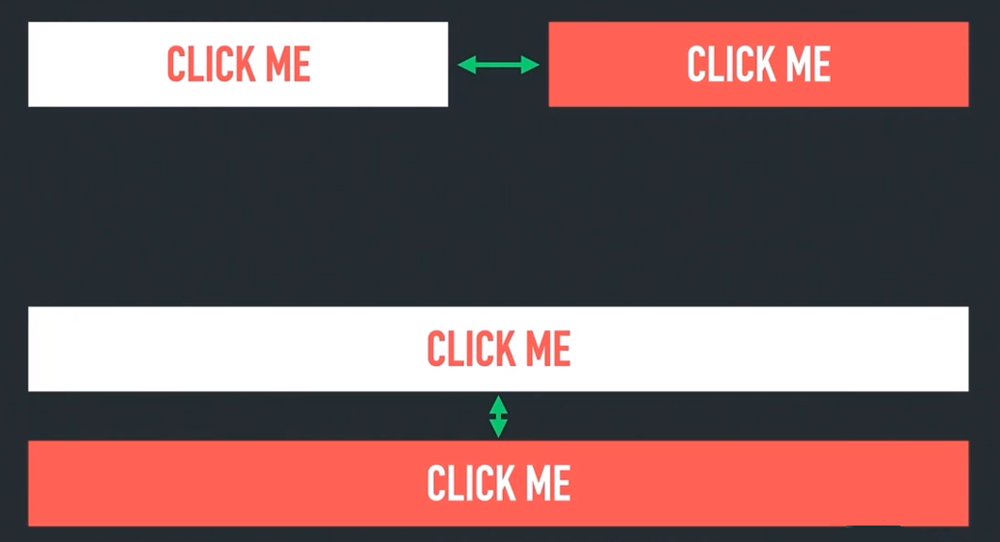
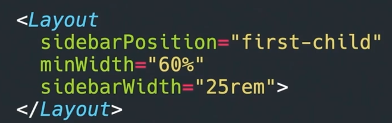
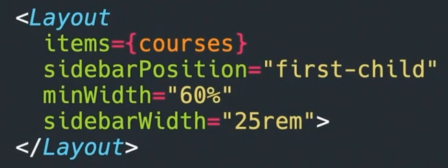

A menudo tenemos la impresión que al trabajar con aplicaciones JavaScript, en las que ponemos los estilos en cada componente, no tenemos que preocuparnos de la arquitectura de nuestros estilos, ya que no tenemos problemas de colisión de clases, especificidad, etc. Si bien es cierto que se evitan ciertos problemas, siguen habiendo muchas cosas a tener en cuenta a la hora de organizar nuestros estilos y aplicar buenas prácticas.
Falta de cohesión en el código
Al tener los estilos aislados en cada componente, si no establecemos una forma de trabajar como equipo, cada dev puede aplicar los estilos de una forma distinta, aumentando la carga cognitiva y dificultando la colaboración. Establecer una forma de trabajar es importante en cualquier aspecto del desarrollo.
Veamos este ejemplo como cada componente es un mundo y si no establecemos una forma de trabajar pues un desarrollador lo va estilar con clases y otros con tags.
Componente con clases

Componente con tags

Podemos decir como para que pensar en clases si está scoped, podemos estilar los tags directamente, y si queremos trabajar así porque funciona en el equipo de trabajo y son componentes y tal, no es que este mal, pero hay que establecer una forma de trabajar, porque si uno lo hace de una forma y otros de otra forma cada vez que cambiamos de componente pues tendriamos que cambiar el chip y pues trabajar de una forma distinta.
Algo que suele pasar, es que se suele ligar componentes con sus creadores y ellos se encargan de tocar y nadie puede tocarlo porque está creado de su forma, así que es muy importante el consenso de equipo y decidamos si nos gusta más utilizar clases o tags, pero que todo el equipo lo haga de la misma forma.
Estas inconsistencias no solo afecta al código sino al tema visual.
Falta de cohesión en el estilo
Aunque este problema también ocurre en aplicaciones tradicionales, en el desarrollo con componentes, donde cada uno tiene sus estilos aislados, es común duplicar estilos para evitar crear una clase global. Esto puede dar lugar a pequeñas inconsistencias en los estilos de la aplicación.
A primera vista, los componentes pueden parecer idénticos, pero a menudo presentan pequeñas diferencias, como un border-radius distinto o una tipografía más bold. Estas variaciones pueden surgir por diversas razones, y debido a que los estilos están aislados en cada componente, es fácil que se filtren estas inconsistencias.
Para mantener la coherencia en la página, sería ideal que todos los componentes similares compartieran el mismo diseño. Sin embargo, a veces trabajamos en empresas donde el equipo de diseño ha creado variaciones (inconsistencias) en los botones o enlaces que se reflejan en el diseño final. Estas diferencias pueden estar justificadas por el propósito específico de cada componente (como links, botones de formulario), pero al implementarlas, es importante cuestionarse si la consistencia visual está siendo sacrificada.
El problema se amplifica cuando trabajamos en equipos donde los componentes se dividen entre varios desarrolladores; uno se encarga del footer, otro del header, y así sucesivamente. En estos casos, las inconsistencias pueden pasar desapercibidas. Por eso, es crucial prestar mucha atención y preguntarse: "¿Este componente ya existe en otro lugar? ¿Puedo reutilizarlo en lugar de crear uno nuevo?"
Aquí es donde la documentación y las herramientas como Storybook juegan un papel fundamental. Una buena documentación de la librería de componentes ayuda a evitar estas pequeñas inconsistencias, asegurando que todos los desarrolladores trabajen con los mismos estándares y reutilicen los componentes existentes cuando sea posible.
Nomenclatura
Otro aspecto interesante es cuando se dice: "Como uso Tailwind o CSS-in-JS, no tengo que preocuparme por el nombre de las clases, o porque el CSS está encapsulado (scoped), no tengo que preocuparme si hay dos clases con el mismo nombre". Es cierto que con estas herramientas se evita el problema de la colisión de clases, pero eso no significa que no tengamos que pensar en los nombres que utilizamos. Al final, todo necesita un nombre.
Si usamos BEM, los modificadores se indican con dobles guiones (--), lo que más que ser un problema es una ventaja, ya que nos proporciona una estructura clara para manejar variaciones de un componente.

Incluso si no utilizamos clases tradicionales y optamos por Tailwind o CSS-in-JS, el desafío del nombrado sigue existiendo. El nombre del componente, de las variantes, e incluso los temas de un componente, son equivalentes a cómo se manejan los modificadores en BEM. Es decir, aún debemos pensar y trabajar en los nombres que asignamos.

Tomando un paso atrás, si observamos, estamos realizando un trabajo similar al que hacemos con herramientas como Styled Components en React. Por ejemplo, si usamos Tailwind, también necesitamos agrupar todas esas clases que aplicarías, como en un botón primary, y comprobar si esa variante está presente. En resumen, el proceso de nombrar sigue siendo esencial, sin importar la herramienta que utilicemos.
Separación de responsabilidades
Otro desafío importante es la separación de responsabilidades en los estilos. Por ejemplo, consideremos un componente de botón con su propio padding, color de fondo y texto. Pero, ¿de quién es la responsabilidad de definir los márgenes que rodean al botón? Si incluimos los márgenes directamente en el botón, podríamos encontrarnos con que esos márgenes no se ajustan bien en otros contextos donde se reutilice el mismo botón.

Una solución es delegar todas las responsabilidades de layout a un componente específico de layout. Este componente se encargará de organizar y distribuir los distintos elementos hijos, mientras que los componentes más pequeños, como el botón, no tendrían que preocuparse por su posicionamiento. Esto es ideal porque el botón no "sabe" en qué contexto se va a usar, por lo que no debería incluir márgenes. Si el botón fuera responsable de sus propios márgenes, tendríamos que pasarle variables que indiquen si debe tener márgenes verticales u horizontales, lo que complicaría su uso.
Cuando comenzamos a pasar variables a través de las props de un componente para controlar tanto su estilo como su lógica, el código se vuelve más complejo y difícil de mantener. Esto es especialmente problemático cuando los estilos están dispersos entre el HTML y el CSS.

Si un componente maneja tanto la lógica como el estilo, se vuelve confuso y más difícil de gestionar.

Por eso, es crucial mantener una clara separación de responsabilidades, evitando mezclar estilos con lógica siempre que sea posible. Esta separación no solo facilita el mantenimiento del código, sino que también mejora la flexibilidad y la claridad de la aplicación.
https://every-layout.dev/